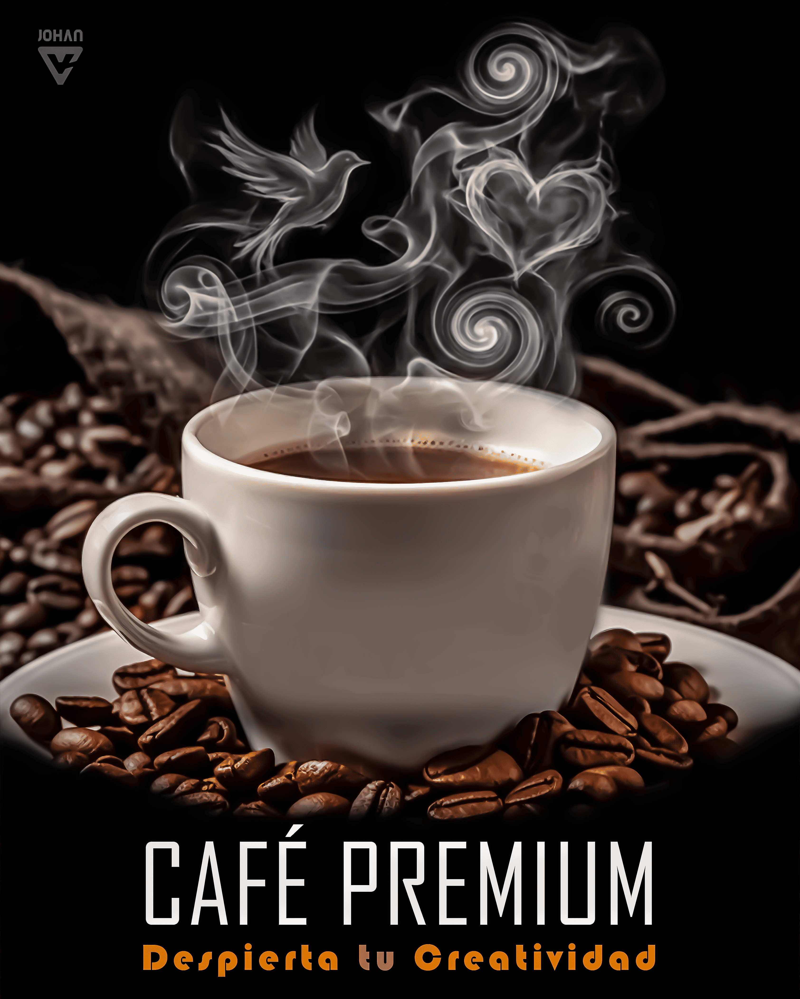
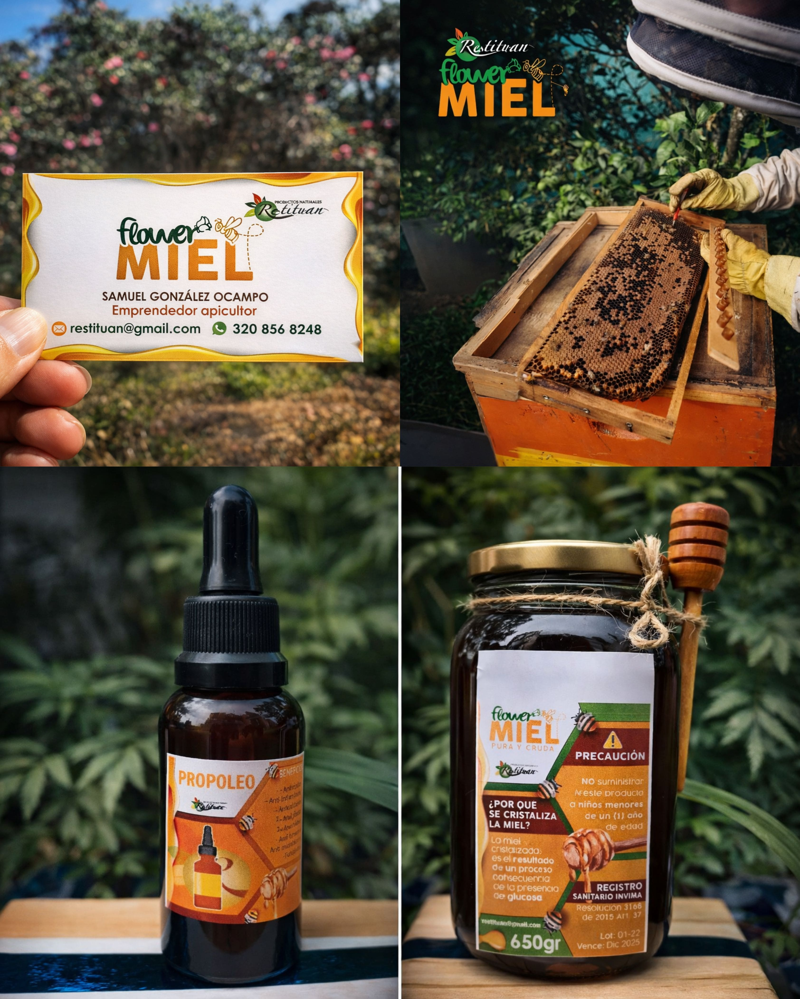
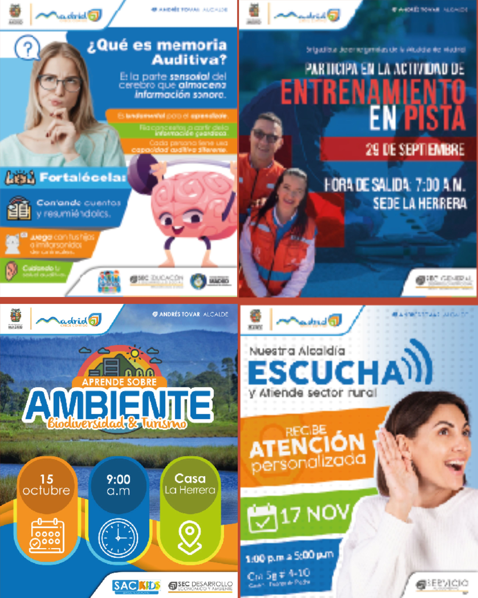
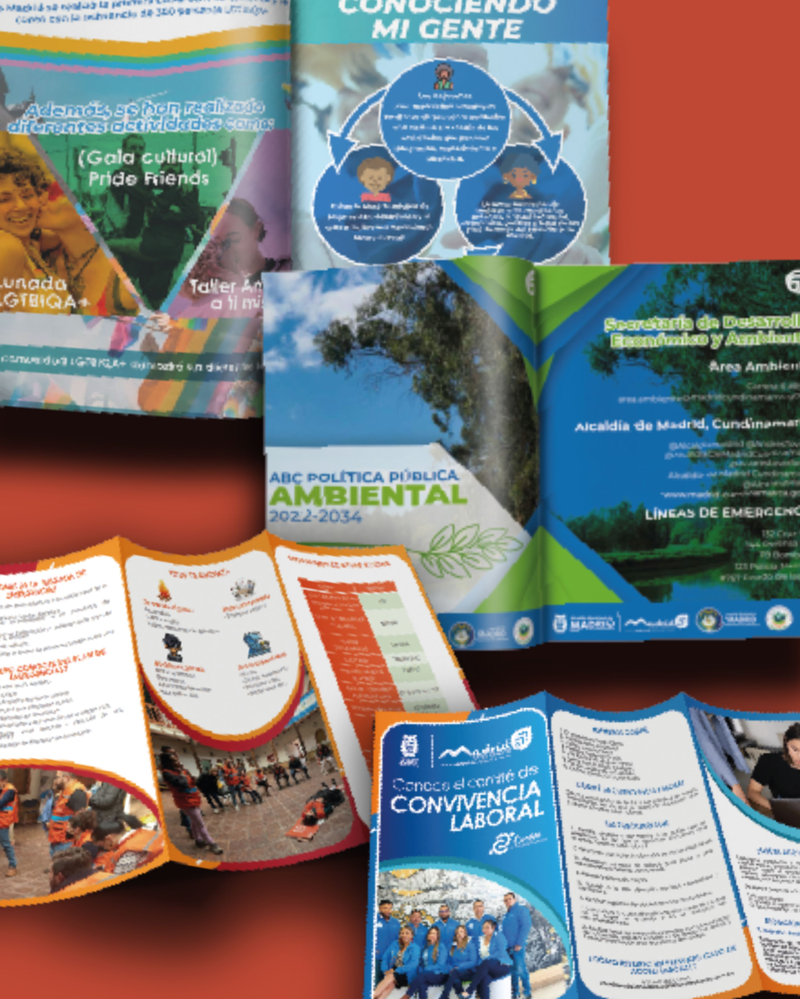
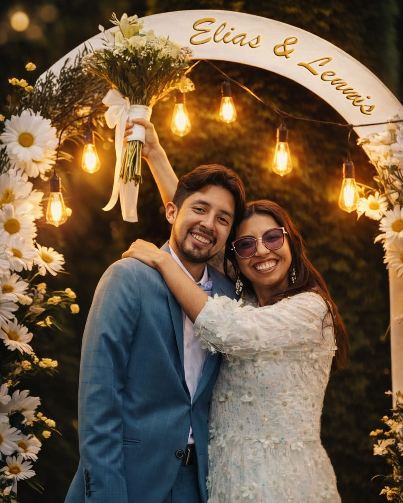

Conoce mis trabajos
Edición de video avanzada y dinámica
Contenido promocional que vende: redes sociales, influencers y empresas.
Creatividad, ritmo y estrategia visual al servicio de tu marca.
Explicativos
Eventos / Viajes
Influencers
Corporativos
Diseño Gráfico
Habilidad en diseño creativo/corporativo (foto-montajes, publicidad, diagramación, papelería corporativa, retoque fotográfico, creación de logotipos y marcas)

Montajes publicitarios

Montajes publicitarios

Montajes publicitarios

Montajes publicitarios

Marca Flower Miel

Flyer/carteles

papeleria corporativa

Retoque Fotográfico